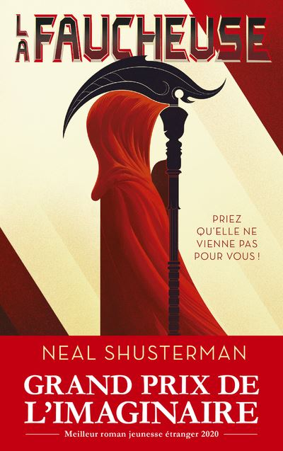

La page littéraire de Zaland
La Faucheuse : Une aventure qui fait peur et réfléchir
Un livre où les gens doivent mourir pour sauver le monde.

Dans le livre La Faucheuse, on est dans un monde où personne ne peut mourir normalement. Les humains vivent pour toujours grâce aux machines, mais ce n’est pas bien, car il y a trop de monde. Alors, il y a des "Faucheurs" qui doivent tuer des gens pour faire de la place.
Deux jeunes, Citra et Rowan, doivent apprendre à devenir Faucheurs. Mais ce n’est pas facile, parce qu’ils doivent tuer des gens qu’ils aiment parfois. Ils découvrent aussi que ce travail est très difficile et que des Faucheurs ne respectent pas les règles.
Mon Avis
Moi, j’ai beaucoup aimé ce livre. L’histoire est très intéressante et un peu triste. Les personnages sont bien écrits, et on a envie de savoir ce qui va se passer pour eux. J’ai aussi trouvé que l’idée des Faucheurs était originale et faisait réfléchir. Mais parfois, c’est un peu compliqué à comprendre.
Je recommande ce livre pour ceux qui aiment les histoires avec de l’action et des émotions.